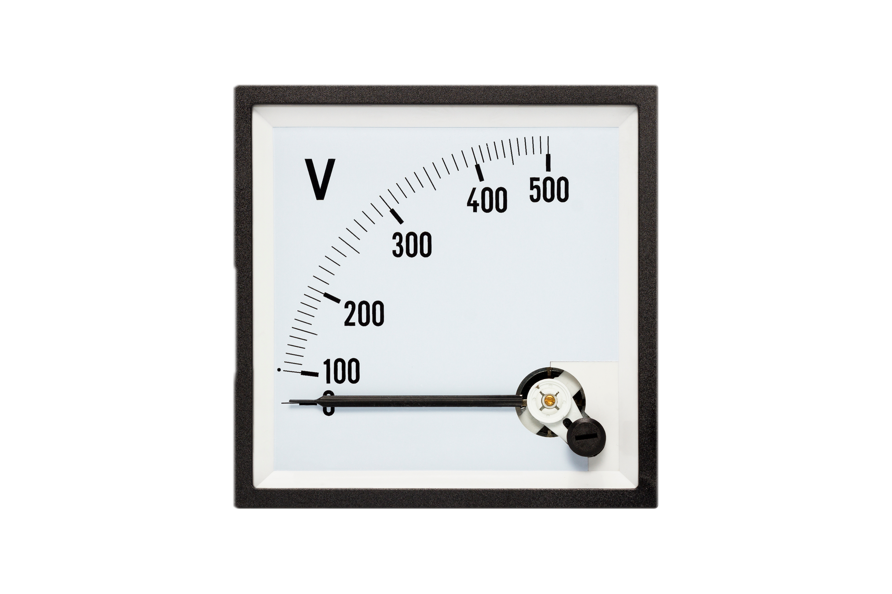

Proprietăți cheie
- Stabilitate bună și precizie ridicată pentru măsurători repetate.
- Domeniu larg de măsurare: AC 0 ~ 500V.
- Formă compactă, ușoară și instalare convenabilă.
- Utilizare facilă în diverse dispozitive de control electronic.
Aparate de măsură
Afișează rapid tendința tensiunii măsurate și se folosește în întreprinderi industriale și miniere, metalurgie, chimie, energie electrică sau echipamente de control.

Se conectează în paralel cu circuitul analizat, iar datorită formei compacte poate fi montat direct în panouri de automatizare. Verifică întotdeauna domeniul de tensiune acceptat înainte de utilizare.